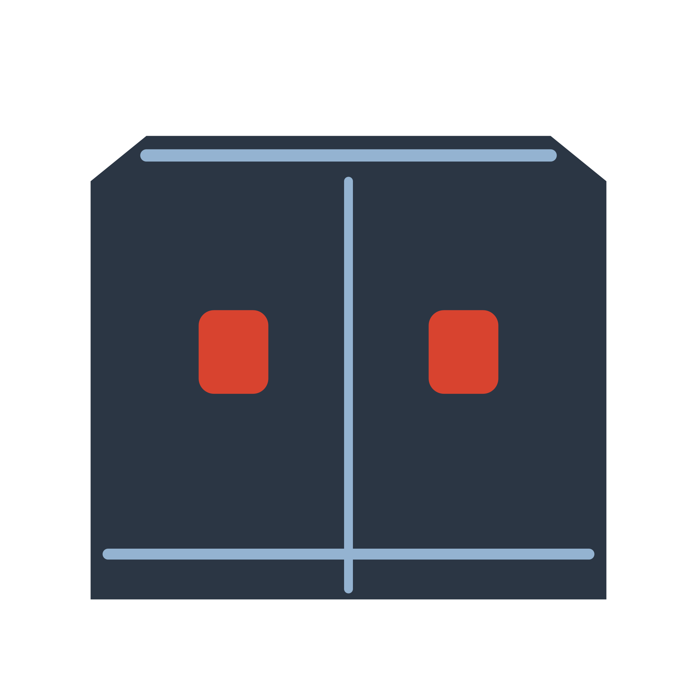

The UK ALBION LOCATION SOUND Transit: damp ivory enamel, dark glazing and a Union Flag, recorded through the game’s Living Materials, crosshatch and fine-stipple acquisition.
The van reverses 1.5 metres on rolling tyres, brakes into a brief locked-wheel skid and takes the load through its body. Headlamps, paired red brake lamps and small light pools accompany contact trails and a short friction puff. Everything settles into the final icon. No repeating idle loop.
Loading the isolated model…
The actual 1987 Transit from the opening and Source drive, isolated with its original wheel pivots and implemented ALBION lettering. Replay is always silent.
These are actual-size raster samples. Packaged 16–32 px icons also retain a measured minimum tail-lamp footprint and clean transparent fringes.
Physical rain, wet glints and one restrained late illumination belong to the same 3.4-second recorded scene. The Dock is silent. Startup can borrow the existing enabled SFX bus for rain and delayed thunder, then stops immediately when ready. This enlarged replay is a complete motion study; the real 160px loader never waits for it to finish.

The original ear is a persistent alternate revealed from Settings → About. Switching icons stops the arrival and installs the chosen still.
The same frames are implemented for native macOS Dock arrival and the game startup. The Dock stays silent; game startup can use the game’s enabled sound bus. Windows and Linux retain the static application icon. Reduced Motion uses the final still immediately. This review does not establish visible native Dock acceptance.